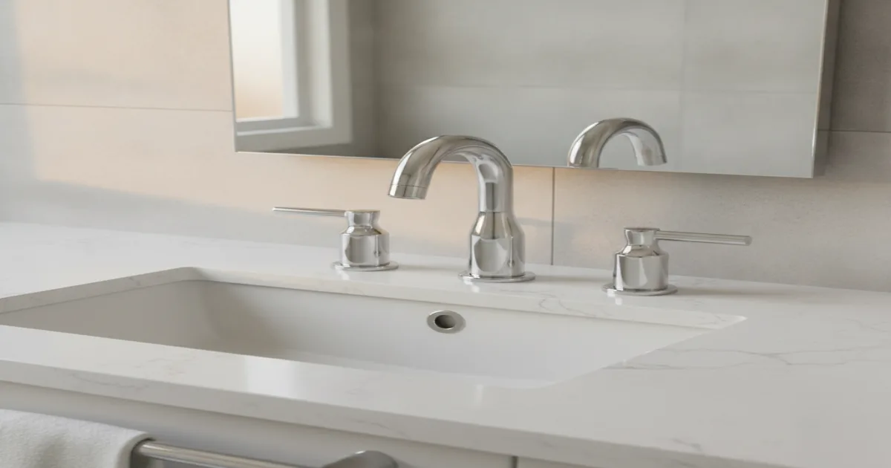
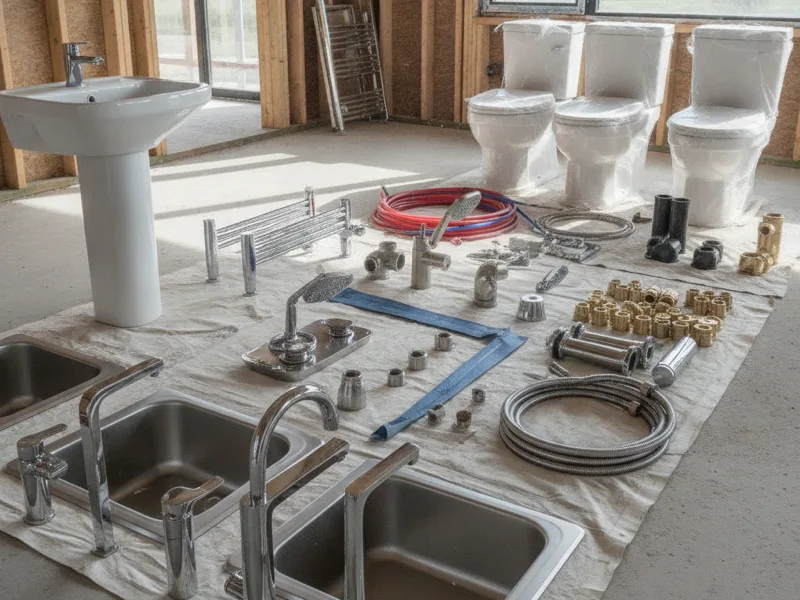

Fixture Replacement in Armonk, NY
Worn, mismatched, or outdated fixtures don't just look tired — they can waste water and hint at bigger problems underneath. We replace them cleanly, matched to your home's existing plumbing.
- Licensed & Insured
- Same-Day Service Available
- Upfront Pricing
- 15+ Years of Experience

How fixture replacement works
We start by looking at what's currently installed and how it connects to your home's existing supply and drain lines, since that determines what new fixtures will actually fit without extra plumbing work. From there, we remove the old fixture, confirm the condition of the connections underneath, and install the replacement, sealing and testing every connection before we call the job done.
If a fixture is an unusual size or an older style that no longer matches standard connections, we'll walk you through what's involved in making it work, rather than forcing a fixture that's a poor fit for your plumbing.

What affects the cost
- Type of fixture. Faucets, showerheads, sinks, and toilets all vary in installation complexity.
- Condition of existing connections. Corroded shutoff valves or supply lines sometimes need replacing along with the fixture itself.
- Matching older plumbing. Homes with older or nonstandard connections can require extra parts or adapters.
- Number of fixtures replaced at once. Doing several fixtures in one visit is often more efficient than one at a time.
- Fixture quality and finish. Higher-end fixtures can affect material cost, though not always labor.
Local factors in Armonk
We see this a lot with recently purchased Armonk homes: a new owner walks through the house and realizes the fixtures don't match from room to room, or clearly weren't updated in years by the previous owner. A dated faucet in one bathroom, a mismatched showerhead in another, a kitchen sink that's seen better decades — it's common enough that we've built a straightforward process around it.
Rather than replacing everything at once, we can prioritize what's actually failing first and plan the rest as budget allows, so a new homeowner isn't stuck doing it all in one expensive visit.
See the full breadth of services we provide for everything else we handle beyond fixtures.
Getting more life out of new fixtures
Modern fixtures, especially those carrying the EPA's WaterSense label, are built to use less water without sacrificing performance, and tend to hold up well when installed correctly and given basic care, like cleaning aerators periodically to prevent mineral buildup.
If you're only dealing with one specific fixture, it's worth knowing the difference between a single faucet installation and a broader fixture update, or between a full sink installation and simply swapping a faucet on an existing sink. If a shower is mixing hot and cold unevenly, that's often about replacing a worn shower valve rather than the fixture itself.
When to call a pro
Call us when a fixture is leaking, corroded, difficult to operate, or simply doesn't match the rest of the room anymore. Fixtures that are struggling to seal properly waste water quietly over time, even if the leak itself seems minor.
See our general plumbing fixture services for everything else we handle for Armonk homes.
Frequently asked questions
Can you replace fixtures that don't match my current plumbing?
In most cases, yes, sometimes with an adapter or minor adjustment to the existing connections. We'll tell you upfront if anything unusual is needed.
How long does it take to replace a fixture?
A single fixture is usually a same-day job. Replacing several fixtures throughout a home takes longer, depending on how many rooms are involved.
Should I replace all my mismatched fixtures at once?
Not necessarily. We can prioritize what's actually failing and help you plan the rest over time if a full update at once isn't practical.
Do newer fixtures really use less water?
Many do, particularly ones carrying an efficiency label. That said, performance varies by model, and we can point you toward options that don't sacrifice water pressure.
What if my old fixture is a nonstandard size?
Older or unusual fixtures sometimes need an adapter or additional part to connect properly to standard modern replacements. We'll identify this before starting the work.
Do you supply the fixtures or do I need to buy them?
Either works. We're happy to install fixtures you've already purchased, or help you choose ones that fit your home and budget.